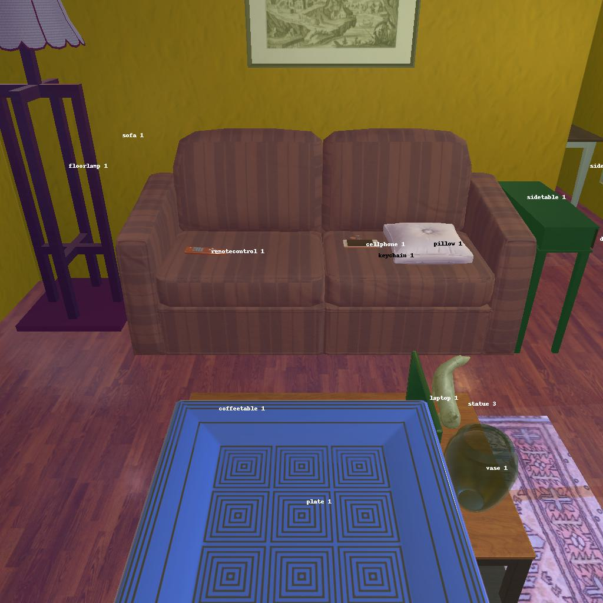

---------------------------------------------------------task: 3---------------------------------------------------------
--------------------------------------------------------------------------------------------------------------------------------------------------------------------
--------------------------------------------------------------------------------------------------------------------------------------------------------------------
Step:--------------------------------------------------------------------------13-------------------------------------------------------------------------------
----------------------------------------
VLM Prompt:
Image1:
Image2:
**Instruction**
1. Analyze the provided image to identify all visible household objects, focusing on those relevant to the task description "examine the plate with the floorlamp."
2. Use the analysis of the image and the task hint "The agent must find an object of the desired type, locate and turn on a light source with the desired object in-hand." to answer the question: what is the most reasonable action in the choices for the task description "examine the plate with the floorlamp"?
4. Decide and write the answer using the template: The answer is: (i): , where i is the real number. If there is no desired object in the image, search every place based on **Initial Observation** to find the object. And if no one is exactly correct, choose a similar answer.
**Initial Observation**
You are in the middle of a room. Looking quickly around you, you can see armchair (1), garbagecan (1), tvstand (1), shelf (1-5), sofa (1), coffeetable (1), sidetable (1-2), drawer (1)
**Answer Choices**
(1): go to armchair 1
(2): go to garbagecan 1
(3): go to tvstand 1
(4): go to shelf 1
(5): go to shelf 2
(6): go to sofa 1
(7): go to sidetable 1
(8): go to sidetable 2
(9): go to drawer 1
(10): go to shelf 3
(11): go to shelf 4
(12): go to shelf 5
(13): put plate 1 in/on coffeetable 1
(14): examine coffeetable 1
**Answer**
Let's think step by step by following the instructions.
----------------------------------------
----------------------------------------
Original Response:
Firstly, we need to identify all visible household objects relevant to the task "examine the plate with the floorlamp." The objects that are relevant to this task are the "plate 1" which is on the "coffeetable 1" and the "floorlamp 1" which is next to the "sofa 1."
Secondly, according to the task hint, the agent must find the plate, locate, and turn on a light source with the plate in hand to examine it. The most reasonable action would be to first go to the coffeetable to pick up the plate and then go to the floorlamp to turn it on for examination.
From the initial observation, we know the locations of various objects but we are specifically interested in the coffeetable and the floorlamp.
Looking at the answer choices, there is no direct action to pick up the plate or turn on the floorlamp. However, the closest action to the desired one is to go to the coffeetable where the plate is located.
The answer is: (14): examine coffeetable 1.
----------------------------------------
----------------------------------------
>>> Refine Original VLM Response and Get Pure Action: examine coffeetable 1
----------------------------------------
-----------------------------------------------------------------
Running time: 8.702711820602417 seconds
Total Money: 1.51457
-----------------------------------------------------------------
-----------------------------------------------------------------
Text Observation:On the coffeetable 1, you see a floorlamp 1, a vase 1, a pillow 1, a statue 3, a laptop 1, a remotecontrol 1, a cellphone 1, and a keychain 1.
-----------------------------------------------------------------
UNSUCCEED